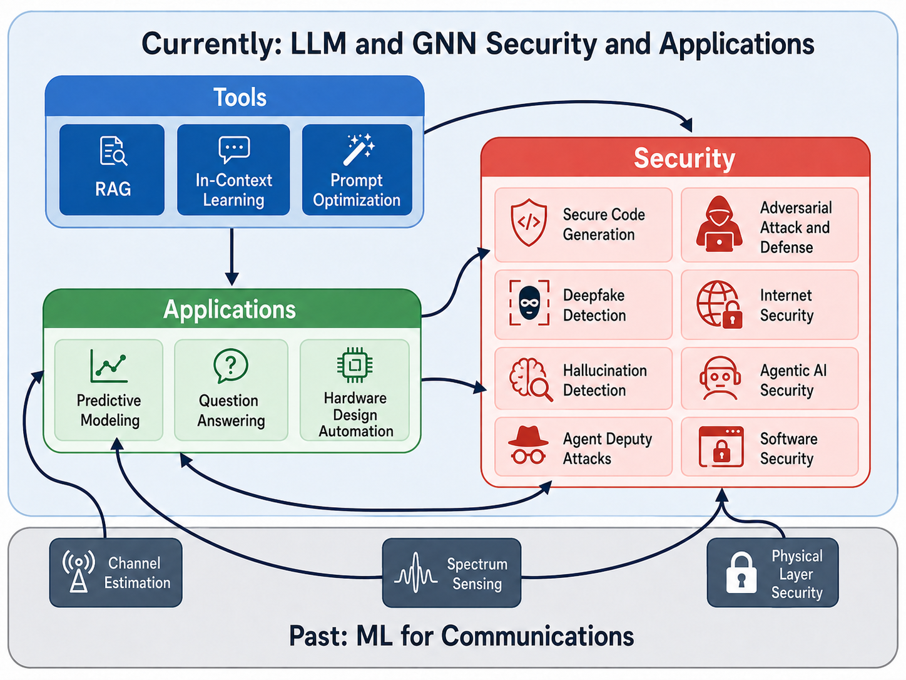
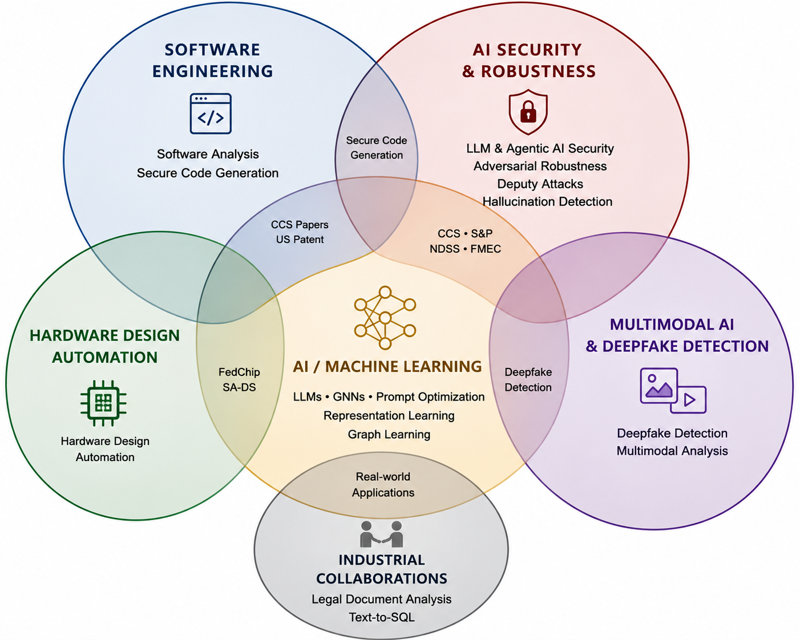

About Me
I am a tenure-track Assistant Professor in the Department of Computer Science at Old Dominion University, with a joint appointment in the School of Cybersecurity. I joined ODU in July 2025 as part of its Trustworthy AI cluster hire.
My research focuses on the security, robustness, and trustworthy applications of Large Language Models (LLMs) and Graph Neural Networks (GNNs), with emphasis on adversarial robustness, prompt optimization, secure code generation, hardware design automation, Internet and IoT security, and deepfake detection.
Research Interests
- Adversarial robustness of GNNs and LLMs in cybersecurity, software security, and trustworthy AI applications
- Prompt optimization and engineering
- Secure and functional source code generation
- Hardware design automation with LLMs and GNNs
- Internet and IoT security
- Deepfake detection and multimodal deepfake detection
- Hallucination detection, agentic AI security, and agent deputy attacks
Education
Ph.D. in Computer Engineering
New Jersey Institute of Technology, 2025
GPA: 4.00/4.00
M.Sc. in Electrical and Electronic Engineering
Eastern Mediterranean University, 2010
GPA: 3.77/4.00
B.Sc. in Electrical Engineering
Birzeit University, 2009


Research Collaborators and Partner Institutions
My research collaborations span the United States, the Middle East, and beyond. Selected collaborating and partner institutions include:

United States
United States
United States
United States

Qatar

Saudi Arabia
United States

Turkey

Jordan
Current Appointment
Assistant Professor, Tenure-Track — Old Dominion University (Jul. 2025 – Present)
- Department of Computer Science; joint appointment with the School of Cybersecurity.
- Trustworthy AI Cluster Hire.
- Research on LLM and GNN security and applications; graduate student supervision; graduate teaching in machine learning and LLMs.